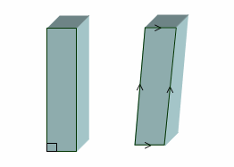
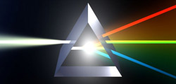

Prism
A solid with two congruent parallel faces, where any cross section parallel to those faces is congruent to them.
Try this
Adjust the height of the prism below. Select examples of various types of prism.
A prism is a solid that has two faces that are
parallel
and
congruent.
These are called the bases of the prism.
If you take any cross section of a prism parallel to those bases by making a cut through it parallel to the bases,
the cross section will look just like the bases.
In the figure above, click 'show cross-section' and drag the cross section up and down. Note that it is always congruent to the bases;
that is, it always has the same shape and size. This is true for right and oblique prisms.
Naming
Prisms are named for the shape of the base.
In the figure above, select the various examples of a prism in the pull-down menu. Note the
way the name of the prism depends on the shape of the bases.
Regular and Irregular prisms
This also follows the shape of the bases. If the bases are regular polygons, then the prism is also called a regular prism.
Likewise, irregular prisms have bases that are irregular polygons.
Right vs oblique prisms

A right prism is one where the bases are exactly one above the other as in the left image.
This means that lines joining corresponding points on each base are perpendicular to the bases.
In the figure above select "allow oblique" in the options menu. The figure is a right prism.
If you drag the top orange dot sideways you can make the prism oblique (or 'skewed').
Cross sections parallel to the bases are still congruent to the bases.
- For right prisms the side faces are rectangles
- For oblique prisms they are parallelograms.
"Thick"polygons
Another way to think about prisms is if they were polygons that have an added 3rd dimension of 'thickness'.
In the figure above, press 'reset' and pull the top down so the length is zero. You now have a polygon.
As you move it up you can see that as the height increases the polygon gets 'thicker'.
Volume of a prism
Is given by the area of a base times the height. This is true for right and oblique prisms.
See Volume of a prism.
Surface area
The surface area of a prism is the sum of the areas of the bases and sides.
For more, see Surface area of a prism.
Cylinders as prisms
Technically a cylinder is not a prism because its sides are curved. But when the bases are regular polygons with a very large number of sides, they look just like cylinders and all the properties of cylinders apply to them. The volume calculation is similar. This is explored further at
Cylinder definition.
Prisms and rainbows

If you shine a beam of white light through a triangular glass prism,
it will break the light into its various wavelengths producing the characteristic 'rainbow'.
In physics textbooks the prism is usually drawn on its side as in the figure above.
In mathematics, a prism can be more than just that triangular shape, as is described above.
Things to try
- In the applet at the top of the page, select the different examples and realize that the bases of a prism can be literally any polygon.
- For each example, check the "show cross section' box, and slide the section up and down, showing that the cross section is the same everywhere.
- For each example, check 'Allow oblique' and drag the top to the right, demonstrating the difference between a right and oblique prism. Adjust the cross section to show it is constant for oblique prisms also.
- Click on 'hide details'. Perform all the above and guess the full correct name of the prism. Then click 'show details' to check your answer.
Related topics
(C) 2011 Copyright Math Open Reference.
All rights reserved